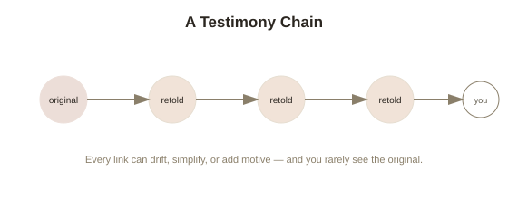

Chapter 4: Testimony — Why Almost Everything You Know, You Know Secondhand
Stop and total up how much of what you'd confidently call "knowledge" you actually verified yourself, firsthand, versus how much you simply took on someone else's word: the shape of the Earth, the existence of most historical events, how your own body works, what's happening in a country you've never visited, most of science. For the overwhelming majority of people, the honest answer is that almost everything they know arrived secondhand. Testimony — believing something because someone else told you — is by volume the single largest source of human knowledge, and epistemology spent centuries treating it as an afterthought before finally giving it serious, direct attention.
Why testimony was historically the neglected middle child of epistemology
Classical epistemology, going back through Descartes and the empiricists, built its models almost entirely around a solitary reasoner working things out from their own perception and logic — Chapter 1's stopped clock, Chapter 3's window and the rain, all firsthand cases. Testimony didn't fit that picture cleanly, because it seemed to just relocate the problem rather than solve it: if I believe something because you told me, my justification seems to depend entirely on whether you were justified, which depends on whoever told you, in a chain stretching back through potentially thousands of people, most of whom you'll never meet or be able to check. Philosopher David Hume, writing in the 1740s, gave one of the earliest serious treatments, arguing testimony is only justified to the extent it's backed by your own accumulated experience of how often testimony from similar sources has turned out reliable in the past — making testimony a derivative, secondhand kind of evidence rather than a genuinely independent source of knowledge in its own right.
The alternative: testimony as its own basic source
A more recent and increasingly influential position, associated with philosophers like C.A.J. Coady, treats testimony as fundamentally different from Hume's picture — not a weak derivative of firsthand experience, but a legitimate, independent source of justification in its own right, on roughly the same standing as perception or memory. The argument runs like this: you couldn't possibly have accumulated enough personal, firsthand experience to individually verify the reliability of testimony in general — you'd need testimony just to learn language in the first place, since virtually no one teaches themselves to speak by pure private observation. If testimony's reliability had to be independently earned through firsthand verification before you could trust any of it, the entire structure would be circular from the very start of anyone's cognitive life. This view treats a basic, default trust in testimony as something closer to what Chapter 2's foundationalists would call a basic belief-forming faculty — not infallible, but not something that needs to bootstrap itself from scratch either.

Where testimony visibly, predictably breaks
Whichever theoretical camp is right, testimony has well-documented, specific failure points worth knowing by name. Chain degradation is the simplest: information passed through multiple retellings tends to drift, sharpen, and simplify with each hop, even when everyone in the chain is acting in good faith — the game of "telephone" isn't just a party trick, it's a real property of how information degrades across successive retellings. Motivated testimony covers cases where a source has a genuine stake in you believing something, independent of whether it's true — advertising, political messaging, and self-interested advice all fall under this, and reliabilism from Chapter 3 gives a clean way to flag it: a source with a strong incentive to mislead you isn't a reliable process for producing true beliefs in you, regardless of how confident or fluent it sounds. And testimonial cascades happen when many people appear to independently confirm the same claim, but are all actually just repeating one original, unverified source rather than genuinely corroborating it through separate channels — creating an illusion of broad, independent confirmation that doesn't actually exist.
A workable, if imperfect, filter
Neither Hume's skepticism nor Coady's default-trust view gives you a clean formula for exactly when to believe testimony and when not to, but combining the two chapters' tools gets close to a workable practice: apply reliabilism's question (has this type of source, under these conditions, historically produced accurate information?) while staying alert for the specific failure modes above — is this a single original source dressed up as multiple independent ones, does the source have a stake in the outcome, and how many retellings has this actually passed through before reaching you? None of this eliminates the fundamental dependence on other people that testimony requires — it can't, since that dependence is the whole reason testimony exists as a category. It just gives you a more precise sense of where, specifically, to apply scrutiny.
Try this
Ideas for noticing or testing this in your own life.
- Pick something you believe confidently and trace it back: is it genuinely firsthand, or testimony, and if testimony, how many links do you think are actually in that chain before it reaches an original source?
- Next time several sources seem to "confirm" the same claim, check whether they're actually independent — or whether it's a testimonial cascade, all tracing back to one original report.
Worth pulling on?
A few loose threads from this chapter — if any of these genuinely grab you, that's a good sign of where to go next.
- Even trusted, well-intentioned testimony assumes the person's own memory of the original event was accurate — and memory itself turns out to be a far less reliable recording device than it feels like from the inside. → Already in the library: Memory and Its Unreliability covers exactly this weak link in the chain.
- All of testimony's problems assume, at minimum, that individual observations should generalize into a reliable expectation about the future — an assumption that turns out to have its own, much deeper philosophical problem. → The subject of the final chapter in this topic: the problem of induction.